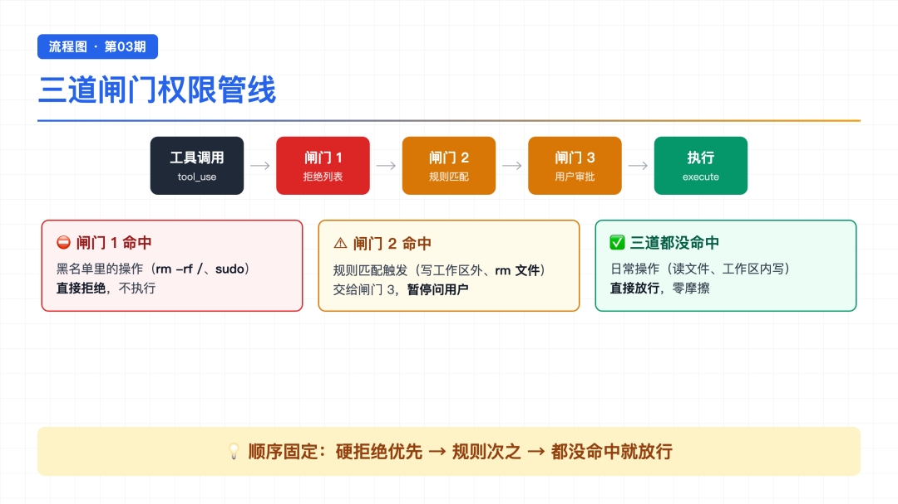
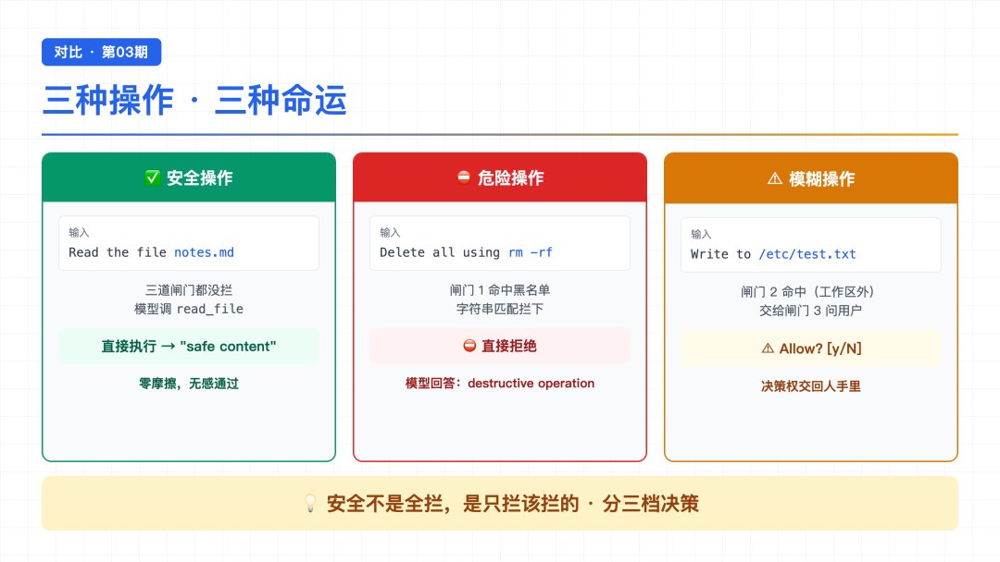
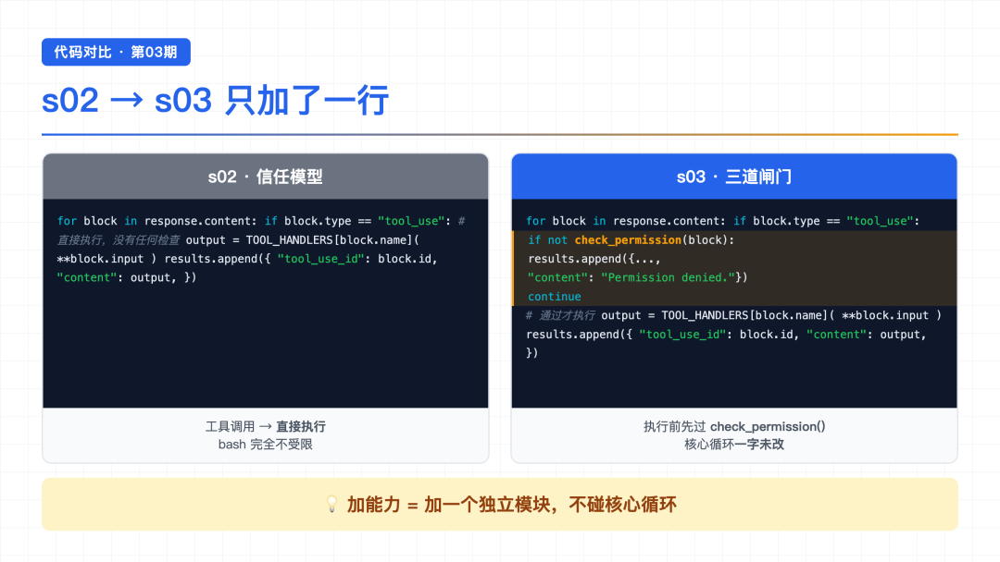
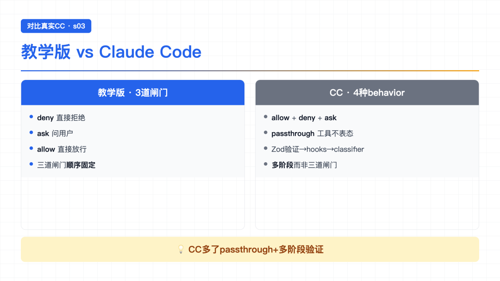

大家好，我是郑同学。周末赶紧多学学[旺柴]
上一节结尾我留了个问题：s02 的 Agent 有 5 个工具，但 bash 不受限制，万一 AI 执行 rm -rf / 怎么办？
这事儿不是吓唬人。你跟它说一句"帮我清理一下项目"，它可能就真的 rm -rf 了——清得干干净净，连系统都给你带走。文件工具虽然被 safe_path 拦着不让跑出工作区，但 bash 这条路完全敞着，没有任何东西挡在它和你的磁盘之间。
今天就解决这个问题。第 3 章，Permission。
● ● ●
很多人第一反应是："那我让模型自己注意点不就行了？在 system prompt 里写上'禁止执行危险命令'。"
我试过。没用。
为什么？因为安全这件事，不能靠信任模型。模型是概率机器，它会幻觉、会误解、会被绕过。你说"别删文件"，它换句英文 remove all files 照样执行；你越禁止，它越可能在你没注意的角落翻车。
真正靠谱的安全，要靠代码，不是靠 prompt。
打个比方：你去银行取钱。柜员会不会因为"系统提示这个人很诚实"就不让你输密码？不会。流程是死的——人脸、密码、签名，一道都不能少。AI 也一样：危险动作必须由代码强制拦截，不是由模型自觉遵守。
那代码怎么拦？思路很简单——在工具执行之前，插一道关卡。每个工具调用都必须先过这一关，过了才能执行。
● ● ●

card-01
关卡怎么设计？我抄了一个很经典的思路：三道闸门，按固定顺序串起来。就像机场安检——先查爆炸物（硬禁止），再查液体（需要二次确认），都没问题就放行。
有些操作永远不该执行，没有任何商量余地。比如 rm -rf /、sudo、shutdown、mkfs。这些进一张黑名单，命中直接挡回去。
DENY_LIST = [ "rm -rf /", "sudo", "shutdown", "reboot", "mkfs", "dd if=", "> /dev/sda", ] def check_deny_list(command: str) -> str | None: for pattern in DENY_LIST: if pattern in command: return f"Blocked: '{pattern}' is on the deny list" return None
逐行看：
DENY_LIST——一个字符串数组，每个元素是一个"危险特征"。只要命令里包含这个字符串，就判定为危险。for pattern in DENY_LIST——遍历每一项，拿去和当前命令做包含匹配。return f"Blocked: ..."——命中就立刻返回拒绝理由，后面不查了。return None——遍历完都没命中，返回 None，表示这道闸门放行。注意这个函数只对 bash 生效，因为只有 bash 命令才可能包含 rm -rf / 这种东西。读文件、写文件这种结构化工具，不在它的管辖范围。
有些操作本身不绝对危险，但取决于上下文。比如 write_file 写到工作区里没问题，但写到 /etc/ 下就要警惕——它可能在改系统配置。
PERMISSION_RULES = [ { "tools": ["write_file", "edit_file"], "check": lambda args: not (WORKDIR / args.get("path", "")).resolve().is_relative_to(WORKDIR), "message": "Writing outside workspace", }, { "tools": ["bash"], "check": lambda args: any(kw in args.get("command", "") for kw in ["rm ", "> /etc/", "chmod 777"]), "message": "Potentially destructive command", }, ] def check_rules(tool_name: str, args: dict) -> str | None: for rule in PERMISSION_RULES: if tool_name in rule["tools"] and rule["check"](args): return rule["message"] return None
这块代码看着复杂，拆开其实就两件事：
PERMISSION_RULES——一个规则表，每条规则三个字段：作用在哪些工具上、检查条件是什么、命中后给用户看什么提示。write_file 和 edit_file：判断路径解析后是不是还在 WORKDIR 工作区内，跑出去就触发。bash：命令里带 rm 、> /etc/、chmod 777 这种关键词，就标记为"潜在破坏性命令"。check_rules 函数遍历所有规则，工具名匹配且条件成立才算命中。命中了怎么办？不是直接拒绝——而是移交给闸门 3，让用户决定。这一步是关键设计：模糊地带不替用户做主。
规则命中后，程序暂停，问用户一句：要不要允许？
def ask_user(tool_name: str, args: dict, reason: str) -> str: print(f"\n⚠ {reason}") print(f" Tool: {tool_name}({args})") choice = input(" Allow? [y/N] ").strip().lower() return "allow" if choice in ("y", "yes") else "deny"
逐行：
input(" Allow? [y/N] ")——阻塞在这里，等用户输入。默认是 N（拒绝），必须显式按 y 才放行。"allow" 或 "deny"，给调用方做决定。这三道闸门各自独立，但串起来用。顺序固定：先查硬禁止，再查规则，最后问用户。任何一道挡住，工具就不执行。
● ● ●
把三道闸门组装成一个总函数 check_permission，插在工具执行之前：
def check_permission(block) -> bool: # 闸门 1: 硬拒绝 if block.name == "bash": reason = check_deny_list(block.input.get("command", "")) if reason: print(f"\n⛔ {reason}") return False # 闸门 2 + 3: 规则匹配 → 用户审批 reason = check_rules(block.name, block.input) if reason: decision = ask_user(block.name, block.input, reason) if decision == "deny": return False return True
逐段拆：
bash 时启用，查拒绝列表。命中就打印 ⛔ 并 return False——调用方看到 False 就跳过执行。ask_user。return False。return True——放行，正常执行。这个函数在循环里怎么用？s02 的循环一个字没改，只在执行工具之前加了一行判断：
for block in response.content: if block.type == "tool_use": if not check_permission(block): # ← s03 新增 results.append({... "content": "Permission denied."}) continue output = TOOL_HANDLERS[block.name](**block.input) # s02 原有 results.append(...)
就这一行 if not check_permission(block)。循环本体一点没动。
● ● ●

card-02
光看代码没感觉，跑一下。第一个 demo 最简单——让 AI 读个文件：
Read the file notes.md
接下来发生什么，逐步看：
第一步：模型收到请求，决定调用 read_file 工具，参数是 path="notes.md"。
第二步：循环拦住这次调用，先过三道闸门。
> read_file
read_file 不在规则表的 tools 里，跳过。第三步：三道都没拦，直接执行。
> read_file safe content
文件内容是 safe content。模型看到结果，回了一句"这是 notes.md 的内容"，循环退出。
整个过程丝滑得像没有权限系统存在。 这就是设计的目标——日常操作零摩擦，只有真正可疑的操作才会停下来问你。
● ● ●
第二个 demo，让 AI 干点坏事：
Delete all files using rm -rf
模型听话地想调 bash 执行 rm -rf。但这一次，它撞墙了。
闸门 1 命中：
> bash ⛔ Blocked: 'rm -rf /' is on the deny list
rm -rf / 这个字符串在 DENY_LIST 里，check_deny_list 直接命中，返回拒绝理由。check_permission 打印 ⛔，返回 False。
循环看到 False，跳过执行，把 "Permission denied." 作为工具结果喂回模型。
模型的反应很有意思——它看到工具被拒了，没有硬刚，而是老老实实回了一句：
I can't execute that, it's a destructive operation.
它承认这是个破坏性操作，自己拒绝了。 为什么？因为它看到工具结果写着 "Permission denied"，知道外部代码不让做。模型很聪明，它会读上下文，你给它的反馈是什么，它就顺着走。
这里有个细节值得说：闸门 1 是字符串匹配，教学版只查了 rm -rf / 这一个精确模式。真实环境里 rm -rf ~/、rm -rf *、各种 shell 展开都能绕过它。生产系统要靠更复杂的解析（Claude Code 用了 YoloClassifier + 8 个规则来源），但教学版的核心是让你理解"闸门"这个概念，不是做一个真的安全的系统。
● ● ●
第三个 demo 最有意思——一个模棱两可的操作：
Write "test" to /etc/test_s03.txt
模型想调 write_file，路径是 /etc/test_s03.txt。这次会发生什么？
闸门 1：工具不是 bash，跳过。
闸门 2 命中！write_file 在规则表里，检查条件是"路径不在 WORKDIR 内"。/etc/test_s03.txt 显然不在工作区，命中：
> write_file ⚠ Writing outside workspace Tool: write_file({'path': '/etc/test_s03.txt', 'content': 'test'}) Allow? [y/N]
程序暂停在这里，等用户输入。看这一行提示——它把 AI 想干的事原原本本告诉你：工具名、路径、内容，让你能看清楚再决定。
闸门 3 启动，问你 Allow? 默认是 N（拒绝）。你按 y 才放行。
这个设计很关键：模糊地带的操作，不替用户做决定，让用户自己拍板。 AI 可能觉得"写个 test 文件没什么"，但你——作为系统管理员——可能知道 /etc/ 下不能乱写。决策权交回人手里，而不是交给一个概率模型。
模型在这期间是暂停状态，它在等工具结果。你按了 N，它收到 "Permission denied."，会回一句：
Would you like to proceed?
它还会问你——因为它不确定你是真不想做，还是只是想换个方式做。这就是 Agent 的灵活性：被拒了不会死掉，会试图理解你的意图。
● ● ●
把三个 demo 放一起对比，权限系统的设计哲学就清楚了：
三种操作，三种处理方式：
安全不是把所有操作都拦下来，而是只拦该拦的。 拦太多，AI 就废了，每个动作都要确认；拦太少，又等于没拦。三道闸门的精妙之处在于——它把决策粒度分成了三档，大部分操作无感，危险操作铁腕，模糊操作留人。
● ● ●

card-03
s03 相对 s02 的变更，其实非常小：
整个 Agent Loop 的核心结构一点没动。 s02 的 while 循环、stop_reason 判断、工具分发——全部保留。唯一的变化是：在 TOOL_HANDLERS[block.name](**block.input) 这一行执行之前，插了一个 if not check_permission(block)。
这就是好架构的力量——加一个能力，不需要动核心循环。权限系统是一个独立的模块，挂在循环外面，循环只管调它。s01 讲的"30 行核心循环"，到了 s03 还是那个循环，只是外面多了一圈保护层。
● ● ●

card-04
最后说一个我踩过的坑。
一开始我把 check_permission 写得很激进——所有 write_file 都要问用户。结果跑起来烦死了，每写一个文件都要确认，demo 根本没法演示。
后来想明白了：闸门 2 的规则要写得很保守。 只在"真正可疑"的时候才触发——比如写工作区外、命令带 rm 。日常操作应该像 Demo 1 那样无感通过，权限系统只在关键时刻冒头。
好的安全系统是隐形的——你感觉不到它存在，直到它该出手的时候。 如果每个操作都要确认，那不叫安全，叫添堵。
● ● ●
check_permission()，核心循环没动感兴趣可以 clone 源码跑一下。
● ● ●
权限系统做出来了，但有个问题开始浮现——check_permission() 是硬编码在循环里的。
现在还好，只有一道关卡。但如果我以后想加：每次工具执行前打日志？执行后自动 git commit？某些操作后触发通知？这些扩展逻辑全都要塞进循环里。
for block in response.content: if block.type == "tool_use": log_before(block) # 加这个？ if not check_permission(block): ... output = TOOL_HANDLERS[...](...) log_after(block, output) # 还有这个？ maybe_git_commit(block) # 还有这个？
循环会越来越胖，越来越乱，每加一个功能就要改一次核心代码。 这违背了 s01 讲的原则——核心循环应该保持干净。
那怎么办？能不能把扩展逻辑挂出去，循环本身一个字不改？
下一节 s04 Hooks，讲的就是这个——给循环加钩子，所有扩展挂在钩子上，循环永远干净。
● ● ●
📦 课程源码：https://github.com/shareAI-lab/learn-claude-code